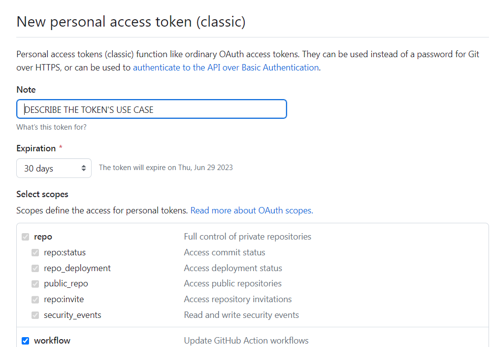
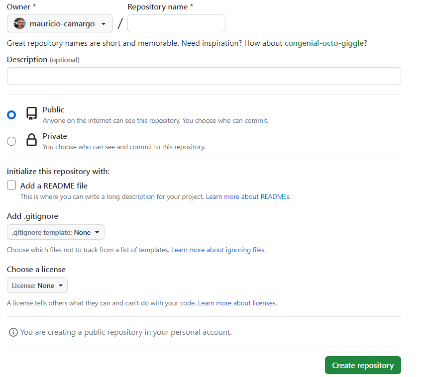
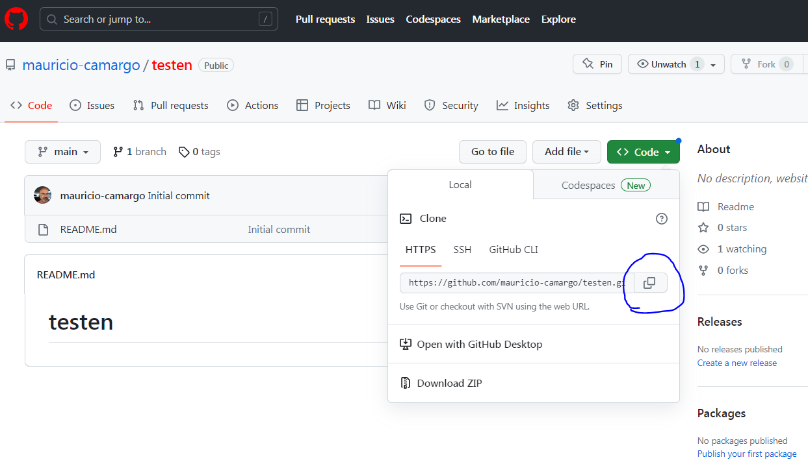
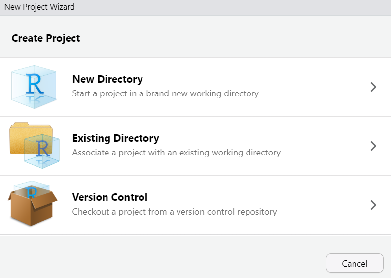
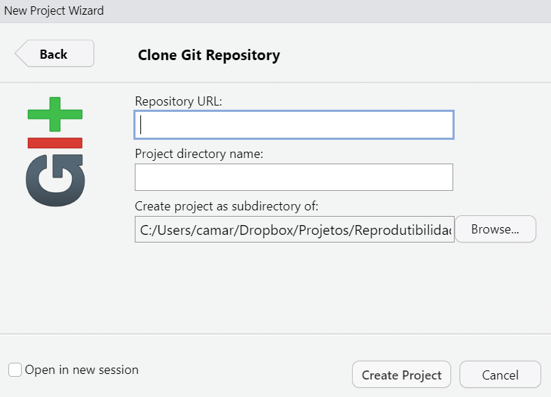
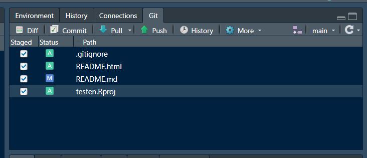
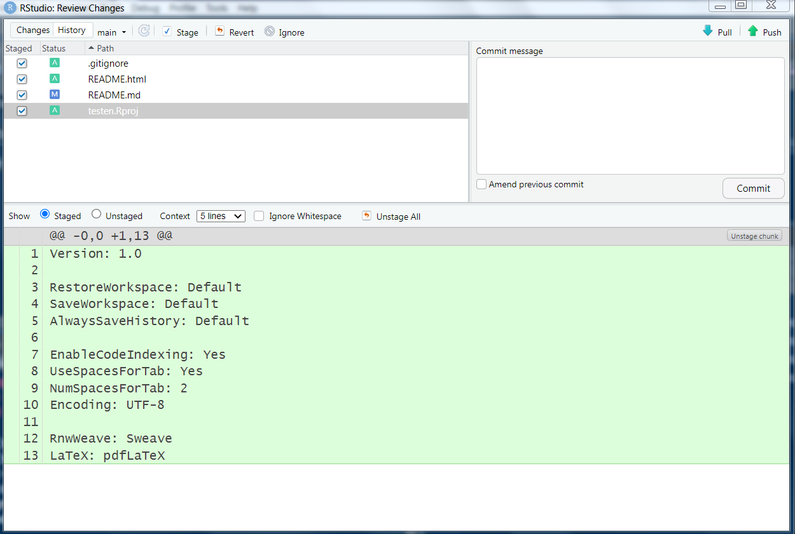
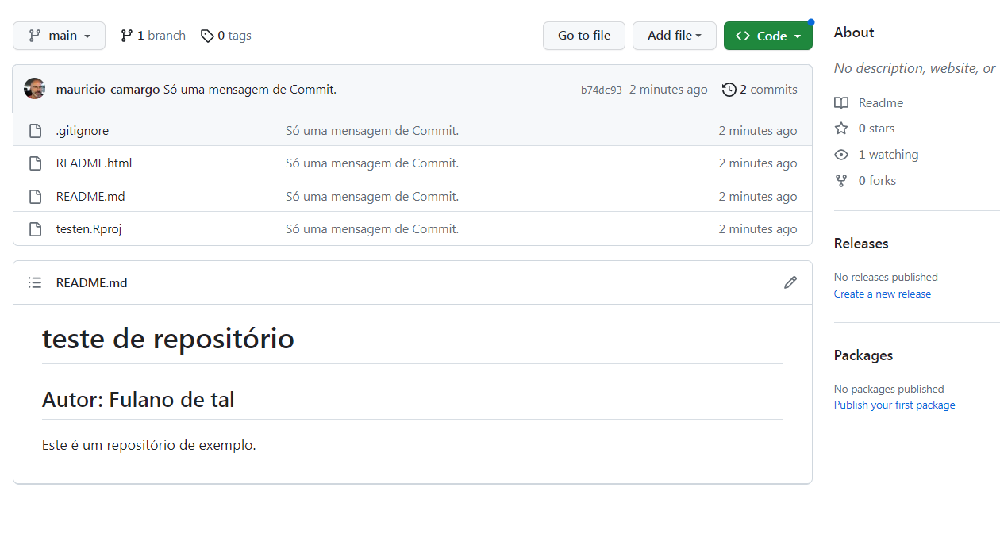
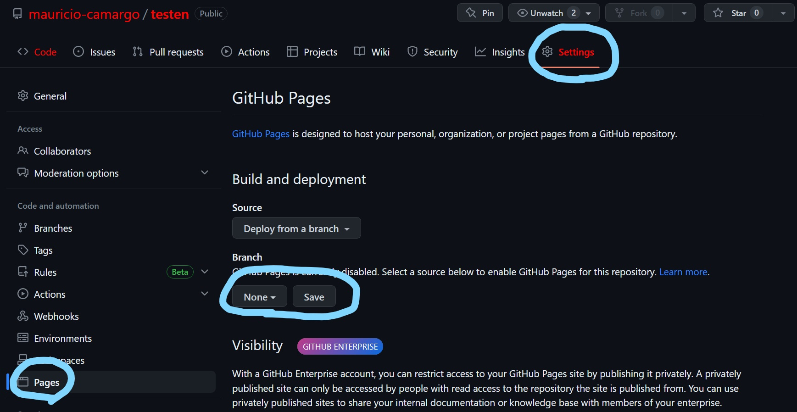

Passos para integrar RStudio e Github
1.Instalar os programas do ecossistema de reprodutibilidade do R:
- R: https://cran.r-project.org
- RStudio: https://posit.co/download/rstudio-desktop/
- Quarto: https://quarto.org/docs/get-started/
- Git: Veja instruções abaixo.
2.Instalar os pacotes no R:
install.packages('usethis')
install.packages('gitcreds')
install.packages('devtools')
install.packages('markdown')
install.packages('rmarkdown')
install.packages('knitr')Esta é uma maneira de instalar vários pacotes de uma só vez.
O pacote tinytex do R serve para instalar toda a infra-estrutura do \(\LaTeX\) para lidar com PDFs.
install.packages('tinytex')
tinytex::install_tinytex()Antes do pacote tinytex a instalação do LaTeX era um inferno!
3. Desativar .RData e . Rhistory no RStudio
Este passo é opcional, porém é muito útil. Para acessá-lo, clique aqui.
4. Instalar o Git
Git: https://git-scm.com/download
Teste a instalação do Git no terminal do Windows.
Para abrir o terminal, clique no botão Iniciar do Windows e digite cmd. Quando a tela do terminal abrir, digite:
cmd é o terminal de comando do Windows, ou seja, a janela onde se digitam comandos ao sistema operacional. Em Linux e Mac é conhecido só como Terminal
git --version5. Criar uma conta gratuita no Github
Você vai precisar de um e-mail @furg.br
Para criar páginas HTML e hospedá-las no Github, você vai precisar criar uma conta de estudante. A maneira mais fácil de fazer isso é usando seu e-mail da FURG.
6. Configurar o Git
- Gravar no Git o nome de usuário e email
Através do pacote usethis podemos configurar o Git diretamente do RStudio.
Antes do pacote usethis a configuração do Git era um sofrimento!
Vamos agora informar seu nome do usuário no Github e seu email usado para abrir a conta. Isso só é feito uma vez.
usethis::use_git_config(
user.name = "SEU NOME NO GITHUB",
user.email = "seu_email_no@gmail.com")- Crie um Personal Access Token (PAT)
De uns tempos para cá o Github aperfeiçoou o método de autenticação no site, de modo que a senha do usuário foi substituída por um token.
Lembre-se sempre que a senha pode ser substituído pelo token. Se em algum momento o Rstudio pedir a senha do Git, use o token.
O token também pode ser criado dentro do RStudio usando o pacote usethis.
Você pode acessar diretamente a página do Github para criar um token, mas usando o pacote usethis as configurações são pré-fixadas.
usethis::create_github_token()Uma janela do navegador irá se abrir e você precisará informar o nome do usuário do Github e a senha.

Escreva um nome para o token e escolha uma data de validade para ele. Deixe todo o resto das opções como estão e pressione o botão Generate token.
ATENÇÃO:
Copie e guarde o token AGORA. Você não terá outra chance fácil de achá-lo novamente.
No entanto, um novo token pode ser criado e utilizado a qualquer momento.
- Atribuir o token ao Git para sempre.
Usando o pacote gitcreds, você pode informar o Git seu recém-criado token e você não mais precisará informá-lo toda vez que entrar o Github.
gitcreds::gitcreds_set()Um prompt na janela de console do R dentro do RStudio vai pedir:
? Enter password or token:
Para responder, clique na janela e cole (ctrl-V) o token recém-copiado e pronto, estamos quase lá!
Para conferir se está tudo certo, digite:
usethis::git_sitrep()PRONTO!
O seu RStudio está configurado para manipular arquivos do Github e criar sites inteiros usando o Quarto.
7. Criar um novo repositório do Github
Entre na página inicial do Github e na parte superior da tela à esquerda pressione o botão NEW.
Dê um nome para o novo repositório e pressione Add a README file. Mantenha o repositório como público para que posteriormente possamos transformá-lo num site (sites privados não podem).

Pronto! O novo repositório foi criado e já pode ser acessado pelo RStudio, por um processo chamado clonagem. Para clonar qualquer repositório no RStudio, pressione o botão < > Code e depois o botão Copiar.
Existem dois métodos para clonar um repositório, usando HTTPS e SSH. Aqui usaremos HTTPS, que é mais simples. SSH é usado em outros sistemas (Linux e Mac), mas é muito mais complicado.

8. Criar um novo projeto no RStudio
Um projeto no RStudio serve para agregar vários arquivos em um único diretório, que poderão ser manipulados mais facilmente.
No RStudio, entre em File<New project>.
Na próxima tela, você poderá escolher entre criar um novo projeto num novo diretório, num diretório existente ou usando controle de versões.
Escolha Version Control.

Hoje em dia eu guardo absolutamente tudo o que é produzido em R ou Python no Github. Mas na prática você pode criar qualquer tipo de arquivo.
Em Repository URL, cole o a URL copiada lá no Github. O nome do novo diretório sugerido irá aparecer no outro campo. Por fim, escolha uma pasta onde uma cópia local do repositório será copiado.

O que aconteceu foi que o RStudio baixou todos os arquivos do repositório recém-criado no Github e agora você pode modificá-los localmente a atualizá-los remotamente.
Pronto! Você está com tudo pronto para começar a criar conteúdo para o seu repositório do Github.
Na aba Files do RStudio, clique no arquivo README.md.
Este é um arquivo Markdown (.md) e portanto aceita toda a formatação do RMarkdown que já vimos. Mas este não um arquivo RMarkdown (.rmd) e portanto não aceita os comandos específicos do R, como chuncks.
## Teste de repositório
### Autor
Este é apenas um repositório de teste.Para testá-lo, pressione Preview ou Ctrl+Shift+K.
9. Sincronizar os arquivos locais com os arquivos remotos do Github.
A sincronização dos arquivos não é tão simples quanto poderia ser, mas lembre-se que estamos lidando com um sistema (Git) que serve para versionamento de programas que podem ser manipulados por muitas pessoas, e por isso temos que aprender o seu funcionamento.
Quando estamos com um projeto aberto no RStudio, aparece uma aba chamada Git, que é a partir de onde faremos as transferências dos arquivos.
Todos os arquivos modificados aparecem ali. Clique em todos eles.

PROBLEMA: quando existem muitos arquivos para fazer um Commit, o RStudio pode travar. Isso acontece principalmente para apresentações do Quarto usando revealjs, que instalam a biblioteca inteira e isso representam dezenas de arquivos.
Para solucionar isso, procure pela aba Terminal dentro do RStudio e digite o seguinte comando, que vai fazer um Commit sem passar pelo RStudio:
git add -A && git commit -m "staging all files"Depois pressione o botão Commit. Na nomenclatura Git, Commit significa gravar no disco as modificações, de forma preparar todos os arquivos para serem enviados ao Github.
A seguinte tela vai aparecer:

Antes de pressionar o botão Commit, você é obrigado a escreve alguma coisa em Commit message, caso contrário o processo será abortado. Isso é uma forma de obrigá-lo a documentar toda e qualquer mudança nos códigos.
Depois de pressionar o botão Commit, uma tela de comando vai aparecer e pode ser fechada.
A operação de enviar os arquivos para o Github, ou seja, fazer um upload, é chamada no linguajar do Git de PUSH. PULL seria a operação oposta, de download de uma versão o site, e é muito importante baixar as versões modificadas antes de começar a trabalhar localmente quando existem muitas pessoas modificando o arquivo simultaneamente.
Pressione então o botão Push e verifique lá na página do seu repositório do Github se as modificações foram efetuadas.
Às vezes pode demorar alguns minutos até que as alterações apareçam online no site. Outros vezes a atualização é muito rápida.

10. Criando um site completo usando o Github pages
Inicialmente, crie um arquivo novo do tipo Quarto document, em File<New file<Quarto document.... O documento vem com o template padrão do Quarto, então você precisa fazer algumas modificações.
Salve este arquivo OBRIGATORIAMENTE com o nome de index.qmd no diretório do projeto.
Pressione o botão Render ou Ctrl+Shift+K para renderizar o arquivo index.qmd e criar o arquivo index.html. Este será o arquivo da primeira página do seu site. Outras páginas são criadas da mesma maneira.
Faça um Commit e depois um Push, conforme explicado anteriormente.
11. Habilitando o Github Pages
Na página do repositório, clique em Settings e depois em Pages. Em Branch, escolha Main e pressione Save.
Pronto, em alguns segundos o site estará no ar.

12. Referências:
- Curso-r: https://curso-r.github.io/zen-do-r/
- R for data science: https://r4ds.had.co.nz/
Precisei adaptar muita coisa desses dois sites, que foram criados há um tempo e já estão ligeiramente desatualizados.